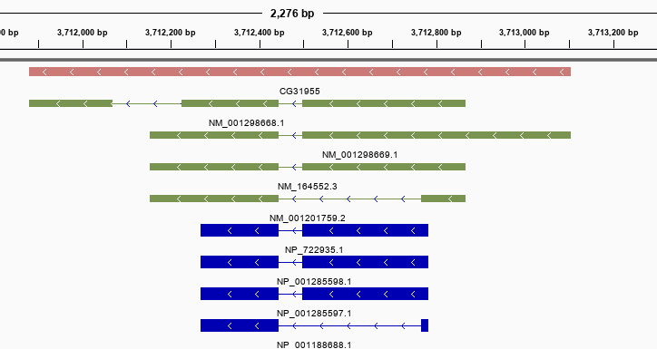

Convert to GFF
Building a nicer gene model
bio creates more meaningful and nicer GFF visualizations:
# Get chromosome 2L for Drosophila melanogaster (fruit-fly)
bio NT_033779 --fetch --rename fly convert it to gff:
bio fly --gff > annotations.gffGFF created with bio
Here is a region from the GFF file created with the code above as visualized in IGV:

The features are explicit, well separated, colored by type, and easier to see and interpret. Below is the same region of the GFF file as downloaded from NCBI. We believe it is more difficult to understand.

bio follows the definitions in the Sequence Ontology. In the GFF files created with bio an exon will parented to a transcript, a CDS will belong to an mRNA. NCBI will use the mRNA as the parent for both types.
gene --> transcript --> exon
gene --> mRNA --> CDSOther considerations:
- Exons have
transcript_idandgene_idattributes set. - CDS features have
protein_idandgene_idattributes set.
Convert all features to GFF:
bio ncov --gff | head -5##gff-version 3
NC_045512.2 . region 1 29903 . + . ID=1;Name=Severe acute respiratory syndrome coronavirus 2;organism=Severe acute respiratory syndrome coronavirus 2;mol_type=genomic RNA;isolate=Wuhan-Hu-1;host=Homo sapiens;db_xref=taxon:2697049;country=China;collection_date=Dec-2019;color=#CECECE
NC_045512.2 . five_prime_UTR 1 265 . + . ID=2;Name=five_prime_UTR;color=#cc0e74
NC_045512.2 . gene 266 21555 . + . ID=GU280_gp01;Name=ORF1ab;gene=ORF1ab;locus_tag=GU280_gp01;db_xref=GeneID:43740578;color=#cb7a77
NC_045512.2 . mRNA 266 21555 . + . ID=YP_009724389.1;Name=YP_009724389.1;gene=ORF1ab;locus_tag=GU280_gp01;ribosomal_slippage=;note=pp1ab; translated by -1 ribosomal frameshift;codon_start=1;product=ORF1ab polyprotein;protein_id=YP_009724389.1;db_xref=GeneID:43740578;color=#7a77cbConvert to GFF only the features with type CDS
bio ncov --gff --type CDS | head -5##gff-version 3
NC_045512.2 . CDS 266 13468 . + . ID=CDS-1;Parent=YP_009724389.1;Name=YP_009724389.1;gene=ORF1ab;locus_tag=GU280_gp01;ribosomal_slippage=;note=pp1ab; translated by -1 ribosomal frameshift;codon_start=1;product=ORF1ab polyprotein;protein_id=YP_009724389.1;db_xref=GeneID:43740578;gene_id=GU280_gp01
NC_045512.2 . CDS 13468 21555 . + . ID=CDS-2;Parent=YP_009724389.1;Name=YP_009724389.1;gene=ORF1ab;locus_tag=GU280_gp01;ribosomal_slippage=;note=pp1ab; translated by -1 ribosomal frameshift;codon_start=1;product=ORF1ab polyprotein;protein_id=YP_009724389.1;db_xref=GeneID:43740578;gene_id=GU280_gp01
NC_045512.2 . CDS 266 13483 . + . ID=CDS-3;Parent=YP_009725295.1;Name=YP_009725295.1;gene=ORF1ab;locus_tag=GU280_gp01;note=pp1a;codon_start=1;product=ORF1a polyprotein;protein_id=YP_009725295.1;db_xref=GeneID:43740578;gene_id=GU280_gp01
NC_045512.2 . CDS 21563 25384 . + . ID=CDS-4;Parent=YP_009724390.1;Name=YP_009724390.1;gene=S;locus_tag=GU280_gp02;gene_synonym=spike glycoprotein;note=structural protein; spike protein;codon_start=1;product=surface glycoprotein;protein_id=YP_009724390.1;db_xref=GeneID:43740568;gene_id=GU280_gp02Convert to GFF only the features tagged with gene S
bio ncov --gff --gene S | head -5##gff-version 3
NC_045512.2 . gene 21563 25384 . + . ID=GU280_gp02;Name=S;gene=S;locus_tag=GU280_gp02;gene_synonym=spike glycoprotein;db_xref=GeneID:43740568;color=#cb7a77
NC_045512.2 . mRNA 21563 25384 . + . ID=YP_009724390.1;Name=YP_009724390.1;gene=S;locus_tag=GU280_gp02;gene_synonym=spike glycoprotein;note=structural protein; spike protein;codon_start=1;product=surface glycoprotein;protein_id=YP_009724390.1;db_xref=GeneID:43740568;color=#7a77cb
NC_045512.2 . CDS 21563 25384 . + . ID=CDS-4;Parent=YP_009724390.1;Name=YP_009724390.1;gene=S;locus_tag=GU280_gp02;gene_synonym=spike glycoprotein;note=structural protein; spike protein;codon_start=1;product=surface glycoprotein;protein_id=YP_009724390.1;db_xref=GeneID:43740568;gene_id=GU280_gp02Convert to GFF only the features that overlap a interval
bio ncov --gff --start 2000 --end 3000 | head -5##gff-version 3
NC_045512.2 . region 1 29903 . + . ID=1;Name=Severe acute respiratory syndrome coronavirus 2;organism=Severe acute respiratory syndrome coronavirus 2;mol_type=genomic RNA;isolate=Wuhan-Hu-1;host=Homo sapiens;db_xref=taxon:2697049;country=China;collection_date=Dec-2019;color=#CECECE
NC_045512.2 . gene 266 21555 . + . ID=GU280_gp01;Name=ORF1ab;gene=ORF1ab;locus_tag=GU280_gp01;db_xref=GeneID:43740578;color=#cb7a77
NC_045512.2 . mRNA 266 21555 . + . ID=YP_009724389.1;Name=YP_009724389.1;gene=ORF1ab;locus_tag=GU280_gp01;ribosomal_slippage=;note=pp1ab; translated by -1 ribosomal frameshift;codon_start=1;product=ORF1ab polyprotein;protein_id=YP_009724389.1;db_xref=GeneID:43740578;color=#7a77cb
NC_045512.2 . CDS 266 13468 . + . ID=CDS-1;Parent=YP_009724389.1;Name=YP_009724389.1;gene=ORF1ab;locus_tag=GU280_gp01;ribosomal_slippage=;note=pp1ab; translated by -1 ribosomal frameshift;codon_start=1;product=ORF1ab polyprotein;protein_id=YP_009724389.1;db_xref=GeneID:43740578;gene_id=GU280_gp01